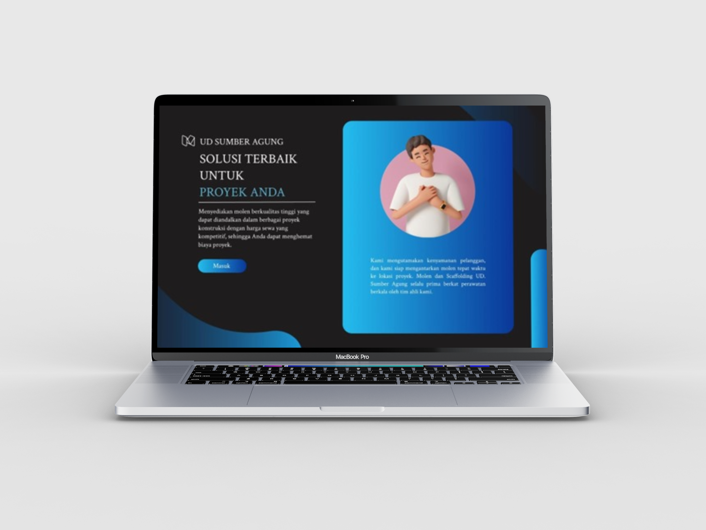
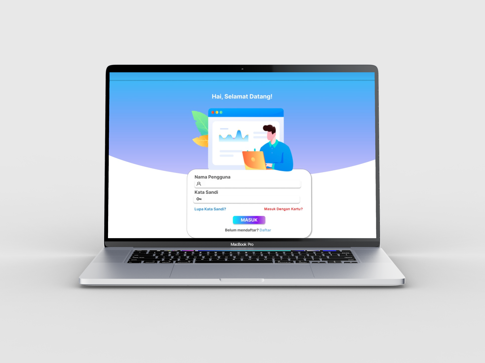
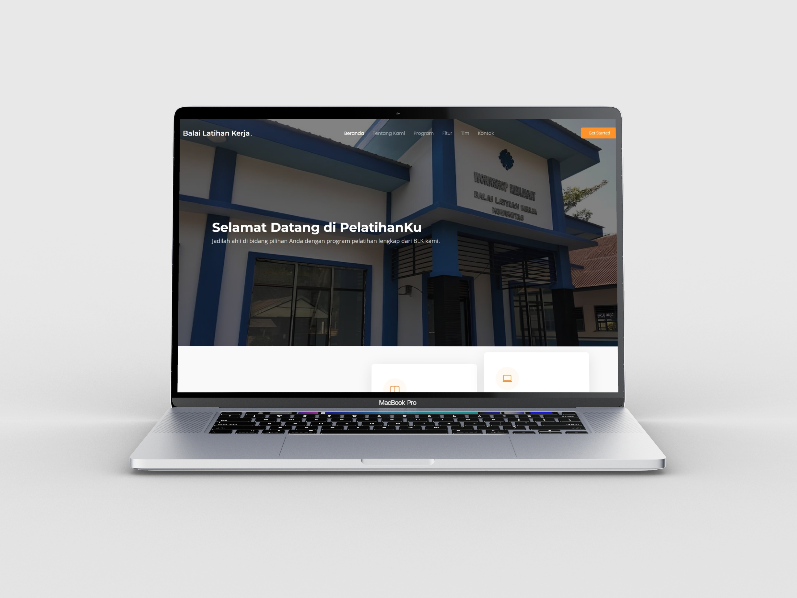
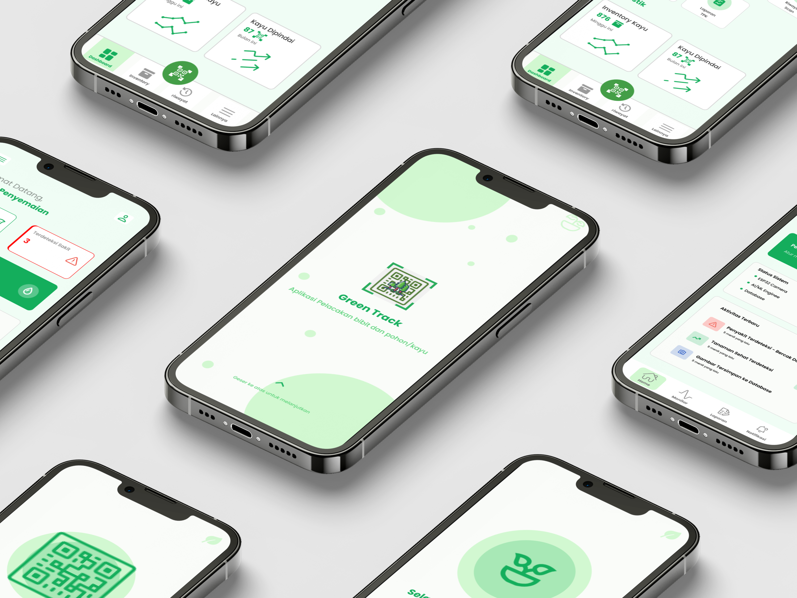
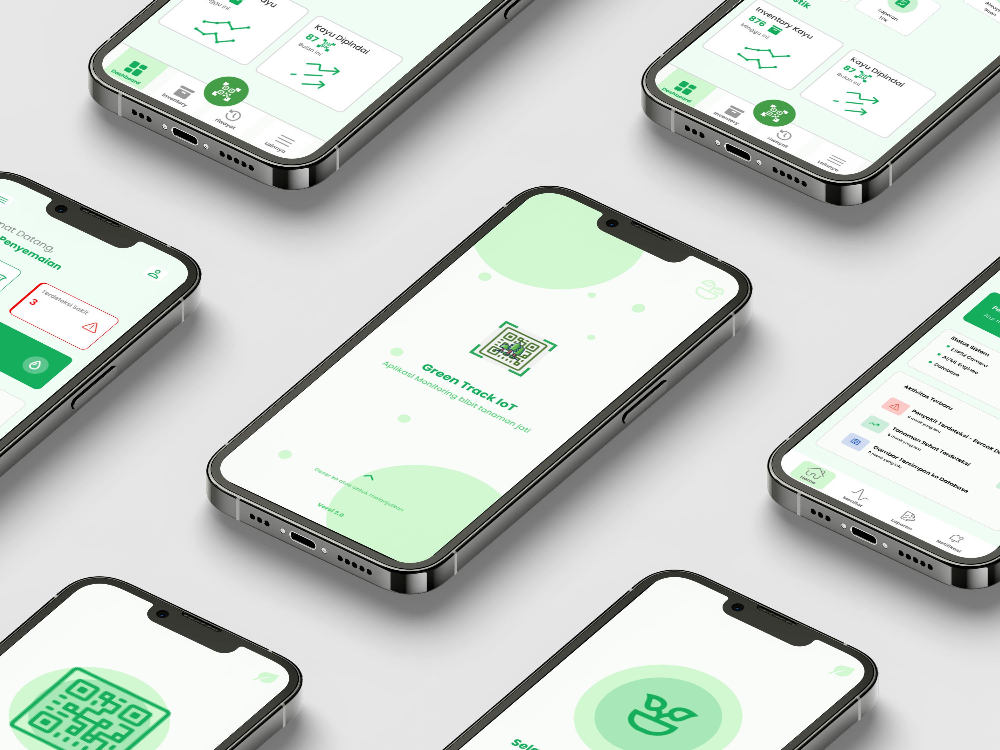
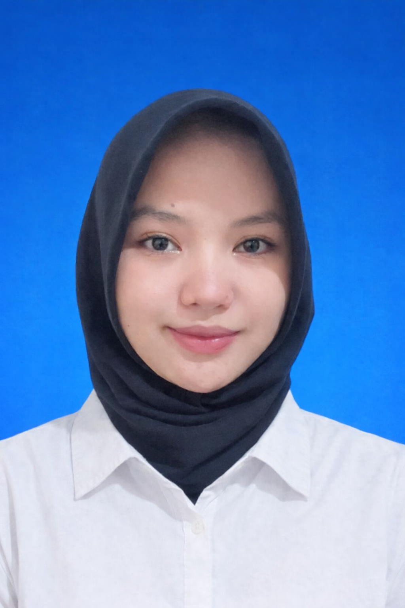

Saya fokus pada pengembangan Fullstack Web dan Flutter Mobile. Mengubah ide kompleks menjadi solusi digital yang bersih dan user-friendly.
Projects Completed
Core Languages
Framework Focus
Academic Rating
Aplikasi yang pernah saya kerjakan selama kuliah.

Program pembukuan berbasis desktop untuk UMKM UD. Sumber Agung (persewaan alat berat) yang membantu pemilik usaha mengelola keuangan, pencatatan transaksi, dan laporan keuangan dengan lebih mudah, rapi, dan efisien.

Aplikasi kasir dan pembukuan digital berbasis desktop yang mendukung transaksi cepat dan akurat dengan fitur scan barcode, RFID, cetak struk, sistem member, pencatatan transaksi, serta laporan keuangan otomatis.

Sistem manajemen pelatihan terintegrasi berbasis mobile dan web. Aplikasi mobile memungkinkan user melakukan pendaftaran pelatihan Balai Latihan Kerja secara online, memantau status pendaftaran, serta menerima notifikasi. Sementara itu, aplikasi web digunakan admin untuk memonitor dan mengelola data peserta secara terstruktur dan real-time.

Sistem pelacakan terintegrasi berbasis Web dan Mobile untuk KPH Perhutani Nganjuk. Aplikasi Web digunakan oleh Super Admin untuk monitoring terpusat, manajemen admin, statistik bulanan, akses seluruh data, pengelolaan bibit & kayu, histori scan barcode, serta riwayat perawatan. Aplikasi Mobile digunakan petugas lapangan untuk pencatatan persemaian bibit, distribusi kayu, notifikasi otomatis, dan scan barcode pada bibit maupun kayu.

Sistem monitoring cerdas untuk bibit jati berbasis Internet of Things (IoT) dan Machine Learning guna mendukung pertumbuhan optimal. Sistem mampu melakukan penyiraman otomatis, memonitor suhu dan kelembaban tanah secara real-time, serta mendeteksi penyakit pada bibit jati berdasarkan analisis citra daun.

"Technology is best when it brings people together."
Sebagai mahasiswa Teknik Informatika, saya terbiasa memecahkan masalah kompleks dengan algoritma yang efisien. Saya senang mempelajari hal baru, terutama di bidang pengembangan perangkat lunak dan teknologi terkini.
Saya selalu terbuka untuk proyek baru, kolaborasi, atau sekadar bertanya tentang dunia IT.